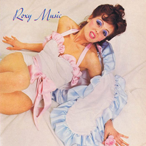
ROXY MUSIC
Roxy Music
Band member
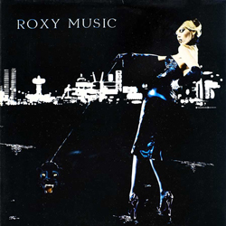
ROXY MUSIC
For Your Pleasure
Band member
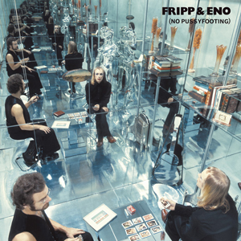
ROBERT FRIPP & ENO
(No Pussyfooting)
Tape loops
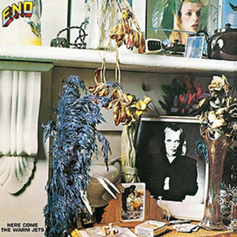
BRIAN ENO
Here Come The Warm Jets
Solo album 1
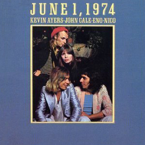
KEVIN AYERS, JOHN CALE, ENO & NICO
June 1, 1974
Live album
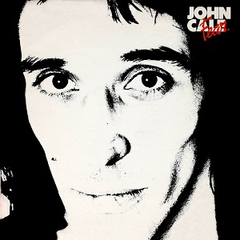
JOHN CALE
Fear
Production / synthesizer / effects
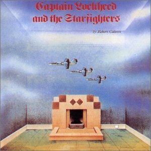
ROBERT CALVERT
Captain Lockheed and the Starfighters
Synthesizer / electronic effects
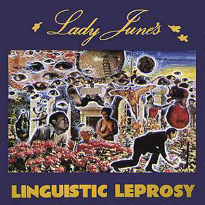
LADY JUNE
Lady June's Linguistic Leprosy
Vocals and various instruments
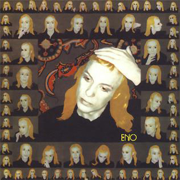
BRIAN ENO
Taking Tiger Mountain (By Strategy)
Solo album 2
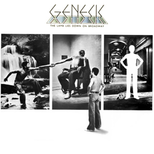
GENESIS
The Lamb Lies Down on Broadway
Vocal treatments
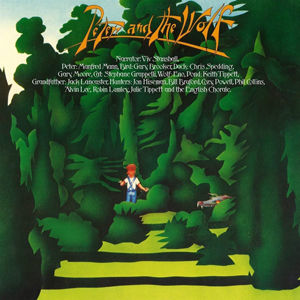
JACK LANCASTER & ROBIN LUMLEY
The Rock Peter and The Wolf
Synthesizer (wolf)
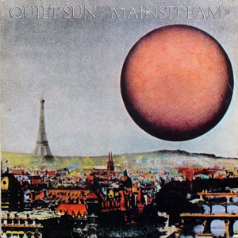
QUIET SUN
Mainstream
Synthesizer / treatments
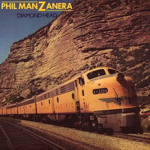
PHIL MANZANERA
Diamond Head
Vocals / treatments / various instruments
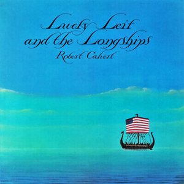
ROBERT CALVERT
Lucky Leif and the Longships
Production / synthesizer
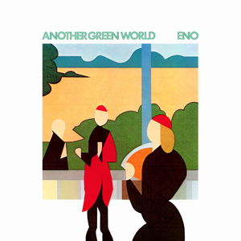
BRIAN ENO
Another Green World
Solo album 3
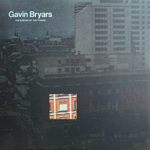
GAVIN BRYARS
The Sinking of the Titanic
Production
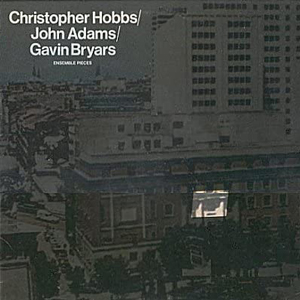
CHRISTOPHER HOBBES / JOHN ADAMS / GAVIN BRYARS
Ensemble Pieces
Production / vocals
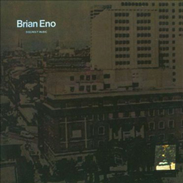
BRIAN ENO
Discreet Music
Solo album 4
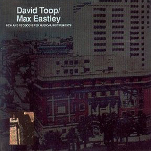
DAVID TOOP / MAX EASTLEY
New & Rediscovered Musical Instruments
Production
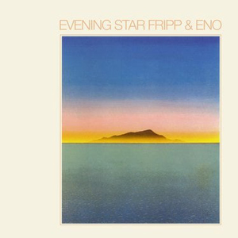
ROBERT FRIPP & ENO
Evening Star
Tape loops
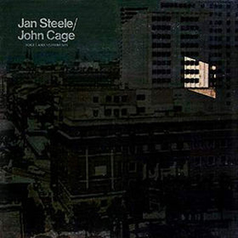
JAN STEELE / JOHN CAGE
Voices and Instruments
Production
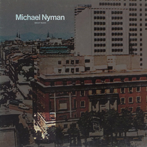
MICHAEL NYMAN
Decay Music
Production
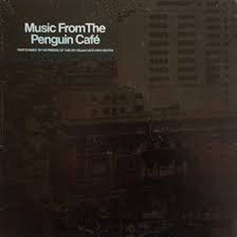
PENGUIN CAFE ORCHESTRA
Music from The Penguin Cafe
Executive Producer
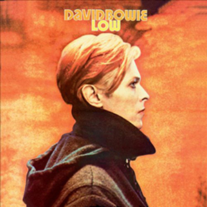
DAVID BOWIE
Low
Synthesizer / various instruments / guitar treatments
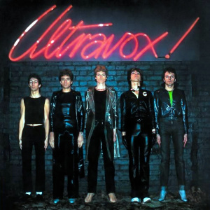
ULTRAVOX
Ultravox!
Co-production
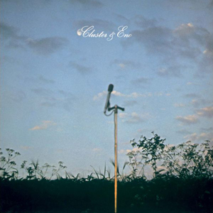
ENO / MOEBIUS / ROEDELIUS
Cluster & Eno
Synthesizer / composer
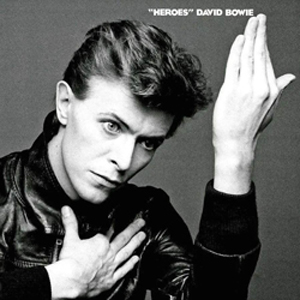
DAVID BOWIE
"Heroes"
Synthesizer / keyboards / guitar treatments
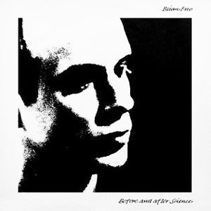
BRIAN ENO
Before And After Science
Solo album 5
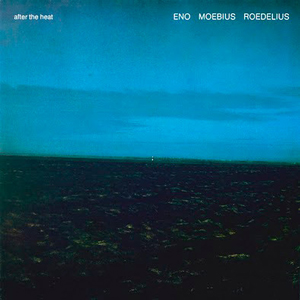
ENO / MOEBIUS / ROEDELIUS
After The Heat
Synthesizer / composer
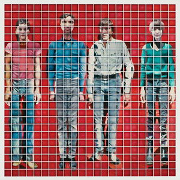
TALKING HEADS
More Songs About Buildings and Food
Production / synthesizer / various instruments / backing vocals
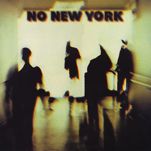
VARIOUS ARTISTS
No New York
Production / cover photograph
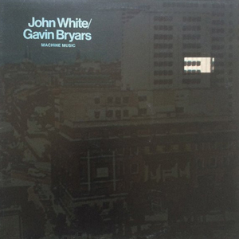
JOHN WHITE / GAVIN BRYARS
Machine Music
Production
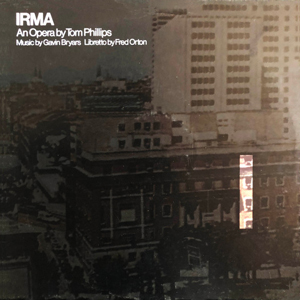
TOM PHILLIPS / GAVIN BRYARS / FRED ORTON
IRMA
Production
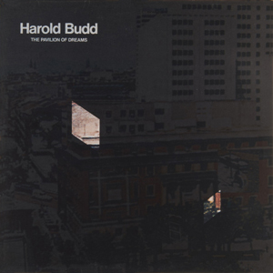
HAROLD BUDD
The Pavilion of Dreams
Production / vocals
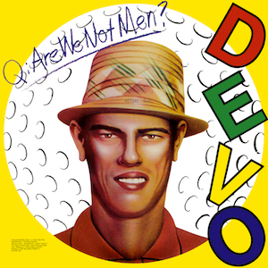
DEVO
Q: Are We Not Men?
A: We are Devo!
Production / synthesizer / vocals
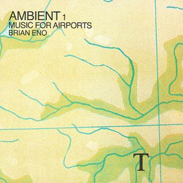
BRIAN ENO
Ambient 1: Music for Airports
Solo album 6
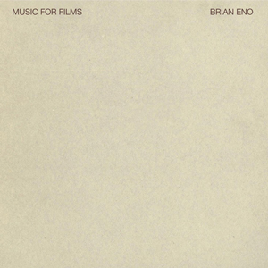
BRIAN ENO
Music for Films
Solo album 7
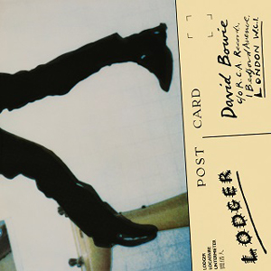
DAVID BOWIE
Lodger
Various instruments / atmospheres / backing vocals
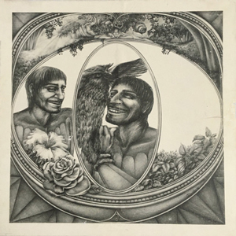
PETER SINFIELD (narrator) / ROBERT SHECKLEY (text) / LEONOR QUILES (illustration)
In a Land of Clear Colours
Production / music
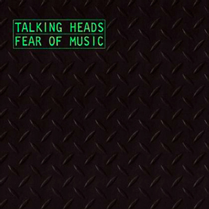
TALKING HEADS
Fear of Music
Production / treatments / vocals
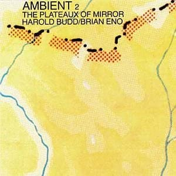
HAROLD BUDD / BRIAN ENO
Ambient 2: The Plateaux of Mirror
Production / various instruments / treatments
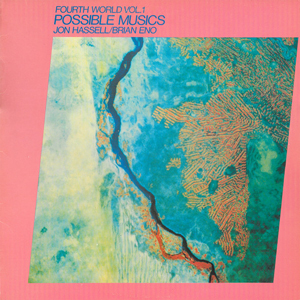
JON HASSELL / BRIAN ENO
Fourth World Vol 1: Possible Musics
Production / guitars / treatments
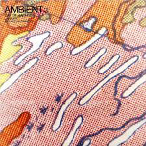
LARAAJI
Ambient 3: Day of Radiance
Production

TALKING HEADS
Remain in Light
Production / various instruments / backing vocals / arrangements
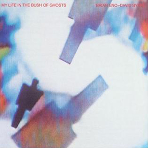
BRIAN ENO / DAVID BYRNE
My Life In The Bush Of Ghosts
Co-production / various instruments
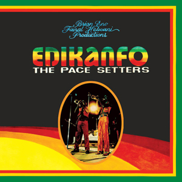
EDIKANFO
The Pace Setters
Production
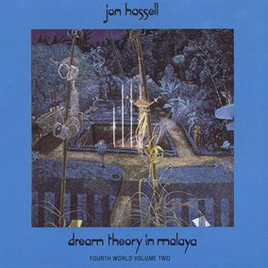
JON HASSELL
Fourth World Vol 2: Dream Theory in Malaya
Co-production / drums / bowl gongs / bells
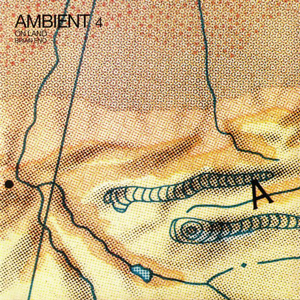
BRIAN ENO
Ambient 4: On Land
Solo album 8
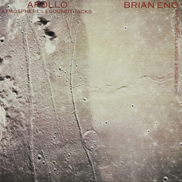
BRIAN ENO
Apollo: Atmospheres and Soundtracks
Solo album 9
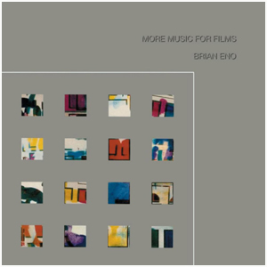
BRIAN ENO
More Music For Films
Compilation album
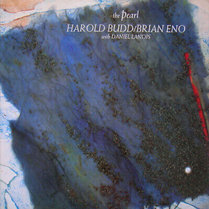
HAROLD BUDD / BRIAN ENO
The Pearl
Co-production / composer
U2
The Unforgettable Fire
Co-production / various instruments / vocals / treatments
TOTO
Dune (soundtrack)
Co-production
TERESA DE SIO
Africana
Vibraphone / keyboards
MICHAEL BROOK / BRIAN ENO / DANIEL LANOIS
Hybrid
Co-production / keyboards
BRIAN ENO
Thursday Afternoon
Solo album 10
BRIAN ENO
More Blank Than Frank
Compilation album
CARMEL
The Falling
Co-production
JON HASSELL
Power Spot
Co-production / electric bass
U2
The Joshua Tree
Co-production / keyboards / backing vocals / programming
TERESA DE SIO
Sindarella Suite
Composer of 'La Storia Vera di Lupita Mendera'
JON HASSELL / FARAFINA
Flash of the Spirit
Production
BRIAN ENO / DANIEL LANOIS / MICHAEL BROOK / ROGER ENO / LARAAJI
Music for Films III
Co-production / cover illustration
JOHN CALE
Words For The Dying
Co-production / keyboards
CARMEL
Set Me Free
Co-production / keyboards
ZVUKI MU
Zvuki Mu
Production
BRIAN ENO
Textures
Solo album 11
Produced exclusively for licensed use on TV and films. Not commercially available.
BRIAN ENO / JOHN CALE
Wrong Way Up
Co-production / vocals / keyboards / percussion / cover art
GEOFFREY ORYEMA
Exile
Production / backing vocals
U2
Achtung Baby
Production / keyboards / string arrangement
BRIAN ENO
Nerve Net
Solo album 12
BRIAN ENO
The Shutov Assembly
Solo album 13
SLOWDIVE
Souvlaki
Keyboards / treatments
U2
Zooropa
Production / treatments / various instruments
BRIAN ENO
Neroli
Solo album 14
JAMES
Laid
Production / various instruments / vocals
BRIAN ENO / DAVID BYRNE
Ghosts
(Not officially released)
Co-production / various instruments
BRIAN ENO
Headcandy
Solo album 15
JAMES
Wah Wah
Co-production
LAURIE ANDERSON
Bright Red
Co-production / keyboards / loops
DEREK JARMAN
Glitterbug (soundtrack)
Production / composition
BRIAN ENO / JAH WOBBLE
Spinner
Co-production / synthesizer / treatments
DAVID BOWIE
1.Outside
Co-production / synthesizer / treatments
PASSENGERS (U2)
Original Soundtracks 1
Production
ELVIS COSTELLO / BRIAN ENO
Songs In The Key Of X (soundtrack)
Co-work on track 'My Dark Life'
BRIAN ENO
The Drop
Solo album 16
HARMONIA & ENO 76
Tracks & Traces
Co-production / synthesizer / e-bass / vocals
BRIAN ENO
Extracts From Music for White Cube
Solo album 17

BRIAN ENO
20'23"
Individual CD used at White Cube installation

BRIAN ENO
23'22"
Individual CD used at White Cube installation

BRIAN ENO
24'53"
Individual CD used at White Cube installation
BRIAN ENO
Lightness: Music for the Marble Palace - The State Russian Museum, St.Petersburg
Solo album 18
BAABA MAAL
Nomad Soul
Co-production
BRIAN ENO
Music for Prague : Installation at the Nova Sin Gallery, Prague
(Not commercially released)
Solo album
BRIAN ENO
Sonora Portraits
Compilation album
BRIAN ENO
I dormienti : Installation at The Roundhouse, London
Solo album 19
JAMES
Millionaires
Co-production
BRIAN ENO
Kite Stories : Installation at Kiasma Museum of Contempary Art, Helsinki
Solo album 20
WIM WENDERS
The Million Dollar Hotel (soundtrack)
Member of The MDH Band
BRIAN ENO / J.PETER SCHWALM
Music for Onmyo-Ji
Co-production
BRIAN ENO
Music for Civic Recovery Centre : Installation at Hayward Gallery, London
Solo album 21
SINÉAD O'CONNOR
Faith and Courage
Co-production / piano
U2
All That You Can't Leave Behind
Co-production / string arrangement / backing vocals / synthesizer
SIKTER
Now, Always, Never
Production / keyboards / vocals
BRIAN ENO
Compact Forest Proposal : Installation at San Francisco Museum of Modern Art
Solo album 22
BRIAN ENO / J.PETER SCHWALM
Drawn From Life
Co-production
JAMES
Pleased To Meet You
Co-production
BRIAN ENO
January 07003 : Bell Studies for the Clock of the Long Now
Solo album 23
ROBERT FRIPP & ENO
The Equatorial Stars
Production / tape loops
BRONAGH GALLAGHER
Precious Soul
Backing vocals / organ / string composer

COLDPLAY
X & Y
Synthesizer
BRIAN ENO
Another Day on Earth
Solo album 24
PAUL SIMON
Surprise
Electronics / sonic landscapes
ROBERT FRIPP & ENO
Beyond Even (a.k.a. The Cotswold Gnomes)
Production / tape loops
COLDPLAY
Viva la Vida or Death and All His Friends
Production / electronics / sonic landscapes
BRIAN ENO / DAVID BYRNE
Everything That Happens Will Happen Today
Co-production / bass / keyboards / vocals
GRACE JONES
Hurricane
Co-production / keyboards / backing vocals
COLDPLAY
Prospekt's March (EP)
Co-production / electronics
U2
No Line On The Horizon
Co-production / synthesizer / vocals / programming
HARMONIA & ENO 76
Tracks & Traces (reissue)
Co-production / synthesizer / e-bass / vocals
NATALIE IMBRUGLIA
Come To Life
Co-production
BRIAN ENO
Making Space
Solo album 25
BRIAN ENO / LEO ABRAHAMS / JON HOPKINS
Small Craft on a Milk Sea
Production / computers / electronics
SEUN KUTI
From Africa With Fury: Rise
Production
BRIAN ENO / RICK HOLLAND
Drums Between The Bells
Music by Eno / Poems by Holland
BRIAN ENO / RICK HOLLAND
Panic of Looking
Music by Eno / Poems by Holland
COLDPLAY
Mylo Xyloto
Co-writer / "enoxification"
BRIAN ENO
Lux
Solo album 26
JAMES BLAKE
Overgrown
Writer of 'Digital Lion'
BRIAN ENO / KARL HYDE
Someday World
Production / vocals / keyboards / guitars
OWEN PALLETT
In Conflict
Synthesizer/ guitar / vocals
BRIAN ENO / KARL HYDE
High Life
Production / vocals / keyboards / guitars
COLDPLAY
A Head Full of Dreams
Backing vocals
BRIAN ENO
The Ship
Solo album 27
BRIAN ENO
Reflection
Solo album 28
THE GIFT
Altar
Production
COLDPLAY
Kaleidoscope
Writer / production on 'Aliens'
BRIAN ENO / TOM ROGERSON
Finding Shore
Sounds
BRIAN ENO / ROGER ENO
Mixing Colours
Sound designs / programming
BRIAN ENO / ROGER ENO
Mixing Colours (Expanded)
Sound designs / programming
BRIAN ENO
Rams (soundtrack)
Solo album 29
LOMA
Don't Shy Away
Production / synthesizer / programming on 'Homing'
BRIAN ENO
ForeverAndEverNoMore
Solo album 30